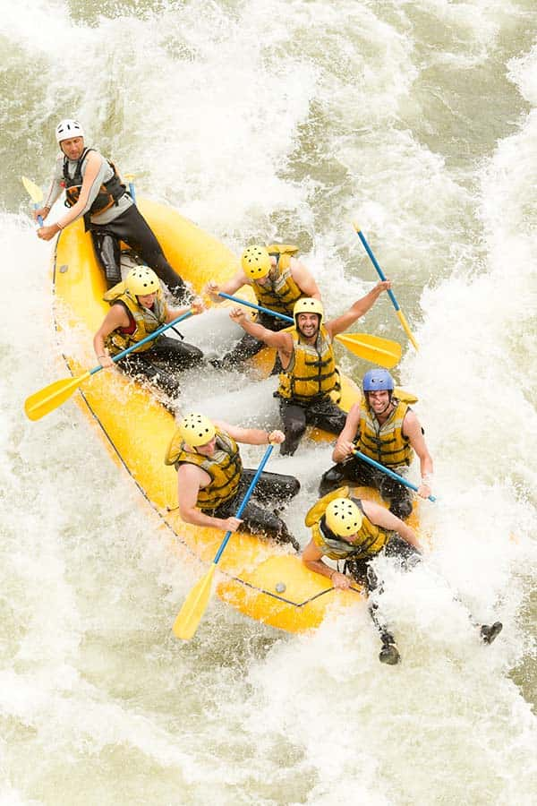
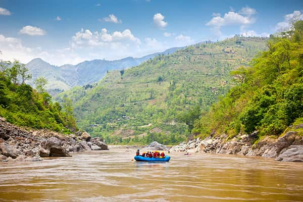
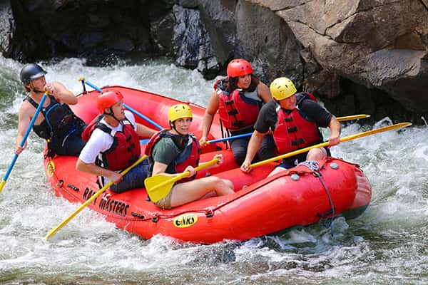
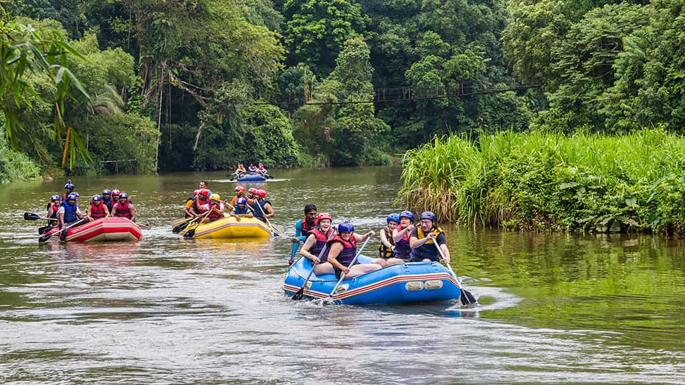
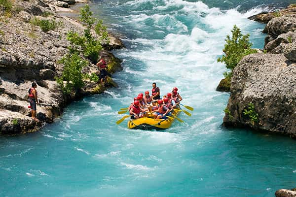
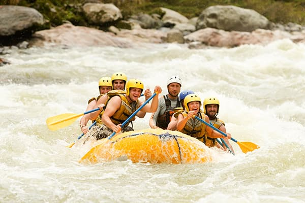

We dare to float where others won't. Make us a part of your next river adventure!

We dare to float where others won't. Make us a part of your next river adventure!
WhiteWater Rafting started in the spring of 2011 when former plumber Phil McDrain fell into an ancient septic tank which collapsed and sent him floating down the Floating Diaper Falls. The story stuck and ended up going viral. Being so widely known for his escepade gave Phil the idea to start White Water Rafting co in order to capitalize on his fame.

The company now rents inner tubes, kayaks, and inflatables, and does guided tours of five different rivers, employes several dozen full-time guides (most former tradesmen), and has served tens of thousands of happy customers with only a few dozen serious injuries. We won't be held liable for anything other than a great time!




